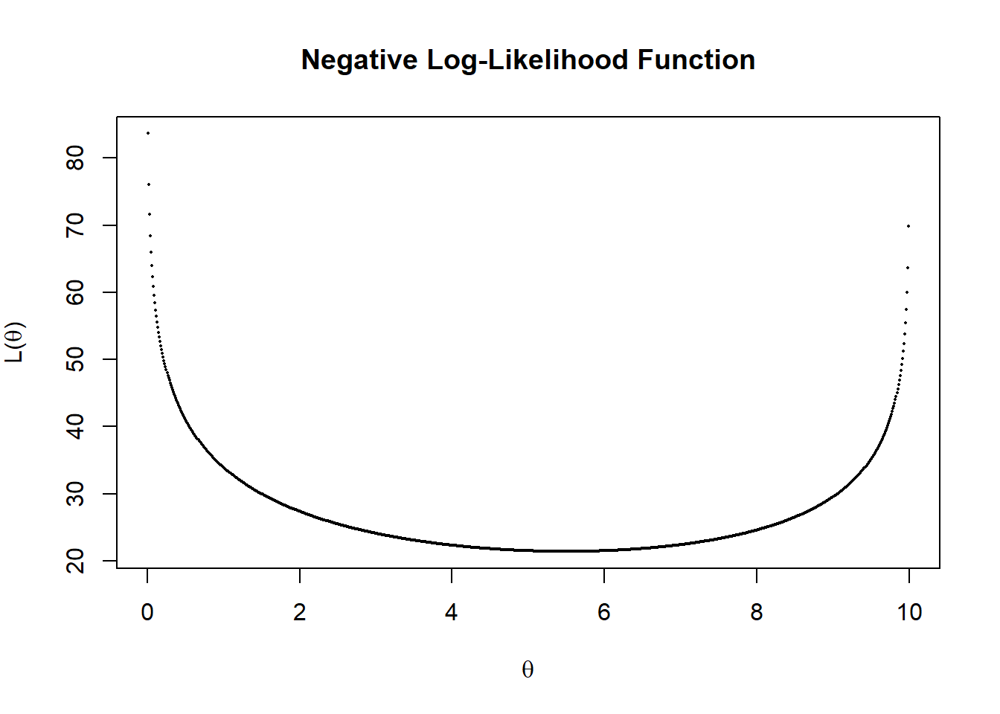

This section shows how to fit basic distributions to a data set.
The results below assume that the data follow a lognormal distribution and usesVGAM library for estimation of parameters
# Inference assuming a lognormal distribution
# First, take the log of the data and assume normality
y = log(ClaimData$Claim)
summary(y);sd(y) Min. 1st Qu. Median Mean 3rd Qu. Max.
0.000 6.670 7.719 7.804 8.728 16.374 [1] 1.683297# confidence intervals and hypothesis test
t.test(y,mu=log(5000)) # H0: mu_o=log(5000)=8.517
One Sample t-test
data: y
t = -15.717, df = 1376, p-value < 2.2e-16
alternative hypothesis: true mean is not equal to 8.517193
95 percent confidence interval:
7.715235 7.893208
sample estimates:
mean of x
7.804222 #mean of the lognormal distribution
exp(mean(y)+sd(y)^2/2)[1] 10106.82mean(ClaimData$Claim)[1] 26622.59#Alternatively, assume that the data follow a lognormal distribution
#Use "VGAM" library for estimation of parameters
library(VGAM)
fit.LN <- vglm(Claim ~ 1, family=lognormal, data = ClaimData)
summary(fit.LN)
Call:
vglm(formula = Claim ~ 1, family = lognormal, data = ClaimData)
Pearson residuals:
Min 1Q Median 3Q Max
meanlog -4.6380 -0.6740 -0.05083 0.5487 5.093
loge(sdlog) -0.7071 -0.6472 -0.44003 0.1135 17.636
Coefficients:
Estimate Std. Error z value Pr(>|z|)
(Intercept):1 7.80422 0.04535 172.10 <2e-16 ***
(Intercept):2 0.52039 0.01906 27.31 <2e-16 ***
---
Signif. codes: 0 '***' 0.001 '**' 0.01 '*' 0.05 '.' 0.1 ' ' 1
Number of linear predictors: 2
Names of linear predictors: meanlog, loge(sdlog)
Log-likelihood: -13416.87 on 2752 degrees of freedom
Number of iterations: 3
No Hauck-Donner effect found in any of the estimatescoef(fit.LN) # coefficients(Intercept):1 (Intercept):2
7.8042218 0.5203908 confint(fit.LN, level=0.95) # confidence intervals for model parameters 2.5 % 97.5 %
(Intercept):1 7.7153457 7.8930978
(Intercept):2 0.4830429 0.5577387logLik(fit.LN) #loglikelihood for lognormal[1] -13416.87AIC(fit.LN) #AIC for lognormal[1] 26837.74BIC(fit.LN) #BIC for lognormal[1] 26848.2vcov(fit.LN) # covariance matrix for model parameters (Intercept):1 (Intercept):2
(Intercept):1 0.002056237 0.0000000000
(Intercept):2 0.000000000 0.0003631082#mean of the lognormal distribution
exp(mean(y)+sd(y)^2/2)[1] 10106.82exp(coef(fit.LN))(Intercept):1 (Intercept):2
2450.927448 1.682685 A few quick notes on these commands:
t.test() function can be used for a variety of t-tests. In this illustration, it was used to test \(H_0=\mu_0=\log(5000)=8.517\)vglm() function is used to fit vector generalized linear models (VGLMs). See help(vglm) for other modeling options.coef() function returns the estimated coefficients from the vglm or other modeling functions.confint function provides the confidence intervals for model parameters.loglik function provides the log-likelihood value for the lognormal estimation from the vglm or other modeling functions.AIC() and BIC() returns Akaike’s Information Criterion and BIC or SBC (Schwarz’s Bayesian criterion) for the fitted lognormal model. \(\text{AIC} =-2* \text{(loglikelihood)} + 2*\text{npar}\) , where npar represents the number of parameters in the fitted model, and \(\text{BIC} =-2* \text{log-likelihood} + \log(n)* \text{npar}\) where \(n\) is the number of observations.vcov() returns the covariance matrix for model parametersThe results below assume that the data follow a Gamma distribution and usesVGAM library for estimation of parameters.
# Inference assuming a gamma distribution
#install.packages("VGAM")
library(VGAM)
fit.gamma <- vglm(Claim ~ 1, family=gamma2, data = ClaimData)
summary(fit.gamma)
Call:
vglm(formula = Claim ~ 1, family = gamma2, data = ClaimData)
Pearson residuals:
Min 1Q Median 3Q Max
loge(mu) -0.539 -0.5231 -0.4935 -0.4141 261.117
loge(shape) -153.990 -0.1024 0.2335 0.4969 0.772
Coefficients:
Estimate Std. Error z value Pr(>|z|)
(Intercept):1 10.18952 0.04999 203.82 <2e-16 ***
(Intercept):2 -1.23582 0.03001 -41.17 <2e-16 ***
---
Signif. codes: 0 '***' 0.001 '**' 0.01 '*' 0.05 '.' 0.1 ' ' 1
Number of linear predictors: 2
Names of linear predictors: loge(mu), loge(shape)
Log-likelihood: -14150.59 on 2752 degrees of freedom
Number of iterations: 13
No Hauck-Donner effect found in any of the estimatescoef(fit.gamma) # This uses a different parameterization (Intercept):1 (Intercept):2
10.189515 -1.235822 (theta<-exp(coef(fit.gamma)[1])/exp(coef(fit.gamma)[2])) #theta=mu/alpha(Intercept):1
91613.78 (alpha<-exp(coef(fit.gamma)[2]))(Intercept):2
0.2905959 plot(density(log(ClaimData$Claim)), main="", xlab="Log Expenditures")
x <- seq(0,15,by=0.01)
fgamma_ex = dgamma(exp(x), shape = alpha, scale=theta)*exp(x)
lines(x,fgamma_ex,col="blue")
confint(fit.gamma, level=0.95) # confidence intervals for model parameters 2.5 % 97.5 %
(Intercept):1 10.091533 10.287498
(Intercept):2 -1.294648 -1.176995logLik(fit.gamma) #loglikelihood for gamma[1] -14150.59AIC(fit.gamma) #AIC for gamma[1] 28305.17BIC(fit.gamma) #BIC for gamma[1] 28315.63vcov(fit.gamma) # covariance matrix for model parameters (Intercept):1 (Intercept):2
(Intercept):1 0.002499196 0.0000000000
(Intercept):2 0.000000000 0.0009008397# Here is a check on the formulas
#AIC using formula : -2*(loglik)+2(number of parameters)
-2*(logLik(fit.gamma))+2*(length(coef(fit.gamma)))[1] 28305.17#BIC using formula : -2*(loglik)+(number of parameters)*(log(n))
-2*(logLik(fit.gamma))+length(coef(fit.gamma, matrix = TRUE))*log(nrow(ClaimData))[1] 28315.63#Alternatively, we could a gamma distribution using glm
library(MASS)
fit.gamma2 <- glm(Claim~1, data=ClaimData,family=Gamma(link=log))
summary(fit.gamma2, dispersion = gamma.dispersion(fit.gamma2))
Call:
glm(formula = Claim ~ 1, family = Gamma(link = log), data = ClaimData)
Deviance Residuals:
Min 1Q Median 3Q Max
-4.287 -2.258 -1.764 -1.178 30.926
Coefficients:
Estimate Std. Error z value Pr(>|z|)
(Intercept) 10.18952 0.04999 203.8 <2e-16 ***
---
Signif. codes: 0 '***' 0.001 '**' 0.01 '*' 0.05 '.' 0.1 ' ' 1
(Dispersion parameter for Gamma family taken to be 3.441204)
Null deviance: 6569.1 on 1376 degrees of freedom
Residual deviance: 6569.1 on 1376 degrees of freedom
AIC: 28414
Number of Fisher Scoring iterations: 14(theta<-exp(coef(fit.gamma2))*gamma.dispersion(fit.gamma2)) #theta=mu/alpha(Intercept)
91613.78 (alpha<-1/gamma.dispersion(fit.gamma2) )[1] 0.2905959logLik(fit.gamma2) #log - likelihood slightly different from vglm'log Lik.' -14204.77 (df=2)AIC(fit.gamma2) #AIC[1] 28413.53BIC(fit.gamma2) #BIC[1] 28423.99Note : The output from coef(fit.gamma) uses the parameterization \(\mu=\theta * \alpha\). coef(fit.gamma)[1]=\(\log(\mu)\) and coef(fit.gamma)[2]=\(\log(\alpha)\),which implies , \(\alpha\)=exp(coef(fit.gamma)[2]) and \(\theta=\mu/\alpha\)=exp(coef(fit.gamma)[1])/exp(coef(fit.gamma)[2])
The results below assume that the data follow a Pareto distribution and usesVGAM library for estimation of parameters.
fit.pareto <- vglm(Claim ~ 1, paretoII, loc=0, data = ClaimData)
summary(fit.pareto)
Call:
vglm(formula = Claim ~ 1, family = paretoII, data = ClaimData,
loc = 0)
Pearson residuals:
Min 1Q Median 3Q Max
loge(scale) -6.332 -0.8289 0.1875 0.8832 1.174
loge(shape) -10.638 0.0946 0.4047 0.4842 0.513
Coefficients:
Estimate Std. Error z value Pr(>|z|)
(Intercept):1 7.7329210 0.0933332 82.853 <2e-16 ***
(Intercept):2 -0.0008753 0.0538642 -0.016 0.987
---
Signif. codes: 0 '***' 0.001 '**' 0.01 '*' 0.05 '.' 0.1 ' ' 1
Number of linear predictors: 2
Names of linear predictors: loge(scale), loge(shape)
Log-likelihood: -13404.64 on 2752 degrees of freedom
Number of iterations: 5
No Hauck-Donner effect found in any of the estimateshead(fitted(fit.pareto)) [,1]
[1,] 2285.03
[2,] 2285.03
[3,] 2285.03
[4,] 2285.03
[5,] 2285.03
[6,] 2285.03coef(fit.pareto)(Intercept):1 (Intercept):2
7.7329210483 -0.0008752515 exp(coef(fit.pareto))(Intercept):1 (Intercept):2
2282.2590626 0.9991251 confint(fit.pareto, level=0.95) # confidence intervals for model parameters 2.5 % 97.5 %
(Intercept):1 7.5499914 7.9158507
(Intercept):2 -0.1064471 0.1046966logLik(fit.pareto) #loglikelihood for pareto[1] -13404.64AIC(fit.pareto) #AIC for pareto[1] 26813.29BIC(fit.pareto) #BIC for pareto[1] 26823.74vcov(fit.pareto) # covariance matrix for model parameters (Intercept):1 (Intercept):2
(Intercept):1 0.008711083 0.004352904
(Intercept):2 0.004352904 0.002901350The results below assume that the data follow an exponential distribution and usesVGAM library for estimation of parameters.
fit.exp <- vglm(Claim ~ 1, exponential, data = ClaimData)
summary(fit.exp)
Call:
vglm(formula = Claim ~ 1, family = exponential, data = ClaimData)
Pearson residuals:
Min 1Q Median 3Q Max
loge(rate) -484.4 0.7682 0.9155 0.9704 1
Coefficients:
Estimate Std. Error z value Pr(>|z|)
(Intercept) -10.18952 0.02695 -378.1 <2e-16 ***
---
Signif. codes: 0 '***' 0.001 '**' 0.01 '*' 0.05 '.' 0.1 ' ' 1
Number of linear predictors: 1
Name of linear predictor: loge(rate)
Residual deviance: 6569.099 on 1376 degrees of freedom
Log-likelihood: -15407.96 on 1376 degrees of freedom
Number of iterations: 6
No Hauck-Donner effect found in any of the estimates(theta = 1/exp(coef(fit.exp)))(Intercept)
26622.59 # Can also fit using the "glm" package
fit.exp2 <- glm(Claim~1, data=ClaimData,family=Gamma(link=log))
summary(fit.exp2,dispersion=1)
Call:
glm(formula = Claim ~ 1, family = Gamma(link = log), data = ClaimData)
Deviance Residuals:
Min 1Q Median 3Q Max
-4.287 -2.258 -1.764 -1.178 30.926
Coefficients:
Estimate Std. Error z value Pr(>|z|)
(Intercept) 10.18952 0.02695 378.1 <2e-16 ***
---
Signif. codes: 0 '***' 0.001 '**' 0.01 '*' 0.05 '.' 0.1 ' ' 1
(Dispersion parameter for Gamma family taken to be 1)
Null deviance: 6569.1 on 1376 degrees of freedom
Residual deviance: 6569.1 on 1376 degrees of freedom
AIC: 28414
Number of Fisher Scoring iterations: 14(theta<-exp(coef(fit.exp2))) (Intercept)
26622.59 The results below assume that the data follow a GB2 distribution and uses the maximum likelihood technique for parameter estimation.
# Inference assuming a GB2 Distribution - this is more complicated
# The likelihood functon of GB2 distribution (negative for optimization)
likgb2 <- function(param) {
a1 <- param[1]
a2 <- param[2]
mu <- param[3]
sigma <- param[4]
yt <- (log(ClaimData$Claim)-mu)/sigma
logexpyt<-ifelse(yt>23,yt,log(1+exp(yt)))
logdens <- a1*yt - log(sigma) - log(beta(a1,a2)) - (a1+a2)*logexpyt -log(ClaimData$Claim)
return(-sum(logdens))
}
# "optim" is a general purpose minimization function
gb2bop <- optim(c(1,1,0,1),likgb2,method=c("L-BFGS-B"),
lower=c(0.01,0.01,-500,0.01),upper=c(500,500,500,500),hessian=TRUE)
#Estimates
gb2bop$par[1] 2.830928 1.202500 6.328981 1.294552#standard error
sqrt(diag(solve(gb2bop$hessian)))[1] 0.9997743 0.2918469 0.3901929 0.2190362#t-statistics
(tstat = gb2bop$par/sqrt(diag(solve(gb2bop$hessian))) )[1] 2.831567 4.120313 16.220133 5.910217# density for GB II
gb2density <- function(x){
a1 <- gb2bop$par[1]
a2 <- gb2bop$par[2]
mu <- gb2bop$par[3]
sigma <- gb2bop$par[4]
xt <- (log(x)-mu)/sigma
logexpxt<-ifelse(xt>23,yt,log(1+exp(xt)))
logdens <- a1*xt - log(sigma) - log(beta(a1,a2)) - (a1+a2)*logexpxt -log(x)
exp(logdens)
}
#AIC using formula : -2*(loglik)+2(number of parameters)
-2*(sum(log(gb2density(ClaimData$Claim))))+2*4[1] 26768.13#BIC using formula : -2*(loglik)+(number of parameters)*(log(n))
-2*(sum(log(gb2density(ClaimData$Claim))))+4*log(nrow(ClaimData))[1] 26789.04